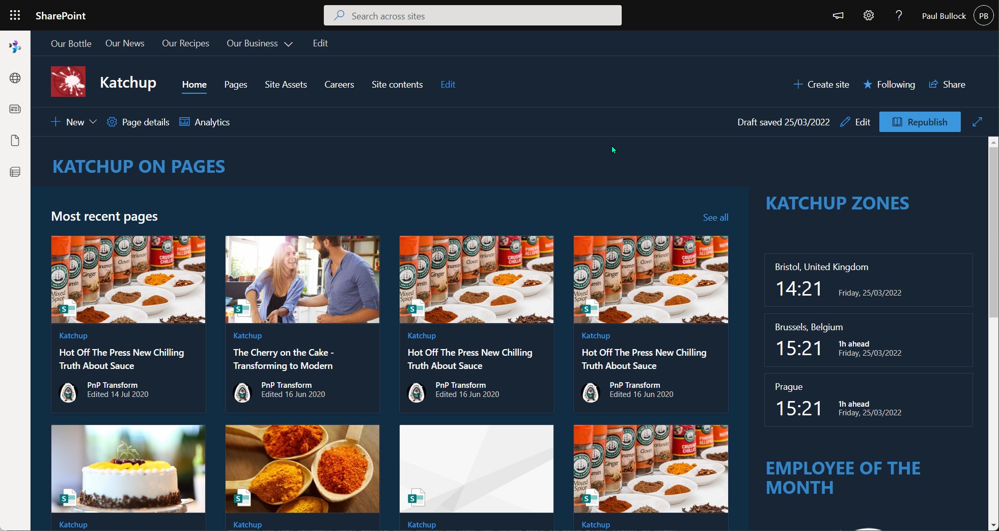

Bulk Convert Classic Publishing Pages to Modern Pages
Summary
The sample script converts all SharePoint online classic publishing pages in a site collection (Publishing Site) to modern pages in a modern communication site.
Sample includes:
- SharePoint Online only conversion of publishing pages
- Renaming default/welcome subsite pages to avoid overwriting the same file for each subsite
- Connecting to MFA or supplying credentials
- Includes Logging to File, log flushing into single log file
- Post Processing of file after transformation
- Suitable for lists beyond 5000 items

# Usage example:
# .\Convert-PublishingPages.ps1 -PartTenant contoso -SourceSitePartUrl mysourcesite -TargetSitePartUrl mytargetsite
[CmdletBinding()]
param (
[Parameter(Mandatory = $true, HelpMessage = "Source e.g. Intranet-Archive")]
[string]$SourceSitePartUrl,
[Parameter(Mandatory = $true, HelpMessage = "Target e.g. Intranet")]
[string]$TargetSitePartUrl,
[Parameter(Mandatory = $false, HelpMessage = "Organisation Url Fragment e.g. contoso ")]
[string]$PartTenant = "contoso",
[Parameter(Mandatory = $false, HelpMessage = "Specify Mapping File")]
[string]$WebPartMappingFile,
[Parameter(Mandatory = $false, HelpMessage = "Specify Page Layout File")]
[string]$PageLayoutMappingFile,
[Parameter(Mandatory = $false, HelpMessage = "Specify log file location")]
[string]$LogOutputFolder = "c:\temp"
)
begin{
$baseUrl = "https://$($PartTenant).sharepoint.com"
$sourceSiteUrl = "$($baseUrl)/sites/$($SourceSitePartUrl)"
$targetSiteUrl = "$($baseUrl)/sites/$($TargetSitePartUrl)"
Write-Host "Connecting to " $sourceSiteUrl
$sourceConnection = Connect-PnPOnline -Url $sourceSiteUrl -ReturnConnection -Interactive
$targetConnection = Connect-PnPOnline -Url $targetSiteUrl -ReturnConnection -Interactive
$location = Get-Location
}
process {
Write-Host "Converting site..." -ForegroundColor Cyan
$web = Get-PnPWeb -Connection $sourceConnection
# Common Transformation Parameters
$transformParams = @{
TargetWebUrl = $targetSiteUrl
TargetConnection = $targetConnection
Connection = $sourceConnection
LogFolder = $LogOutputFolder
CopyPageMetadata = $true
LogType = "File"
LogSkipFlush = $true
PublishingPage = $true
SkipItemLevelPermissionCopyToClientSidePage = $true
Overwrite = $true
DontPublish = $true
}
if($WebPartMappingFile){
$transformParams.Add("WebPartMappingFile", "$($location)\$($WebPartMappingFile)")
}
if($PageLayoutMappingFile){
$transformParams.Add("PageLayoutMappingFile", "$($location)\$($PageLayoutMappingFile)")
}
$transformParams
# Use paging (-PageSize parameter) to ensure the query works when there are more than 5000 items in the list
$pages = Get-PnPListItem -List "Pages" -Connection $sourceConnection -PageSize 500
Foreach($page in $pages){
$targetFileName = $page.FieldValues["FileLeafRef"]
Write-Host " Processing $($targetFileName)"
# If Welcome Page, then Rename,
# typical for flattening multiple sites that contain standard page(s) e.g. Welcome.aspx or Default.aspx
if($targetFileName -eq "Welcome.aspx"){
$targetFileName = "Welcome-$($web.Title.Replace(" ", "-")).aspx"
Write-Host " - Updating Welcome.aspx page to $($targetFileName)" -ForegroundColor Yellow
}
if($targetFileName -eq "Default.aspx"){
$targetFileName = "Default-$($web.Title.Replace(" ", "-")).aspx"
Write-Host " - Updating Default.aspx page to $($targetFileName)" -ForegroundColor Yellow
}
Write-Host " Modernizing $($targetFileName)..."
# Use the PageID value instead of the page name in the Identity parameter as that is more performant
# + it works when there are more than 5000 items in the list
# Convert the page
$result = ConvertTo-PnPPage -Identity $page.FieldValues["ID"] `
-PublishingTargetPageName $targetFileName `
@transformParams
if($result){
# Post Processing actions on file
$transformedItem = Get-PnPFile -Url $result -AsListItem -Connection $targetConnection
if($transformedItem){
Write-Host " - Post Processing $($targetFileName)..."
# Peform changes...
}
}
Write-Host " Modernized $($targetFileName)!"
}
# Write the logs to the folder
Save-PnPPageConversionLog
Write-Host "Script Complete! :)" -ForegroundColor Green
}
Check out the PnP PowerShell to learn more at: https://aka.ms/pnp/powershell
Contributors
| Author(s) |
|---|
| Paul Bullock |
Disclaimer
THESE SAMPLES ARE PROVIDED AS IS WITHOUT WARRANTY OF ANY KIND, EITHER EXPRESS OR IMPLIED, INCLUDING ANY IMPLIED WARRANTIES OF FITNESS FOR A PARTICULAR PURPOSE, MERCHANTABILITY, OR NON-INFRINGEMENT.